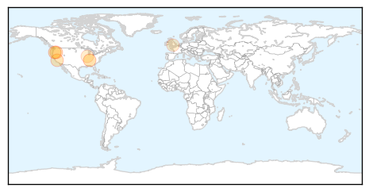
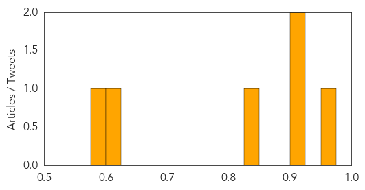

Meningitis
30-Day Web Trend
1 alerts, 0 warnings

30-Day Twitter Trend
0 alerts, 0 warnings

Article Locations
Article Confidences
Top Articles:
- 0.957
- Raw milk is ‘a spin of the roulette wheel’: Tennessee health officials
- 0.916
- After deadly outbreak, Oregon school to do mass vaccinations
- 0.911
- How Does a University Decide to Vaccinate an Entire Student Body?
- 0.831
- Authorize the MenB vaccines
- 0.608
- Mum who lost her daughter calls for meningitis vaccine
- 0.598
- Are dog vaccines making pets sick?
Top Tweets:
-
No tweets found for Feb 25, 2015
Hemmorhagic Fever
30-Day Web Trend
0 alerts, 0 warnings
30-Day Twitter Trend
0 alerts, 0 warnings

Article Locations

Article Confidences

Top Articles:
-
No articles found for Feb 25, 2015
Top Tweets:
-
No tweets found for Feb 25, 2015